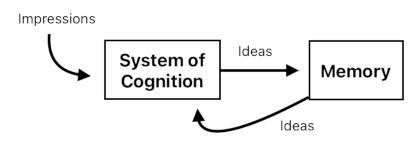
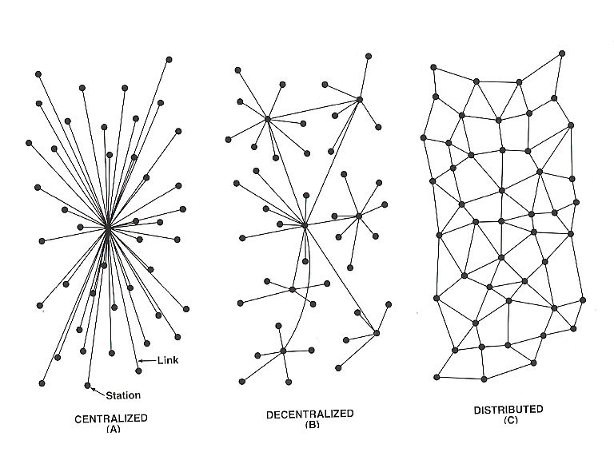
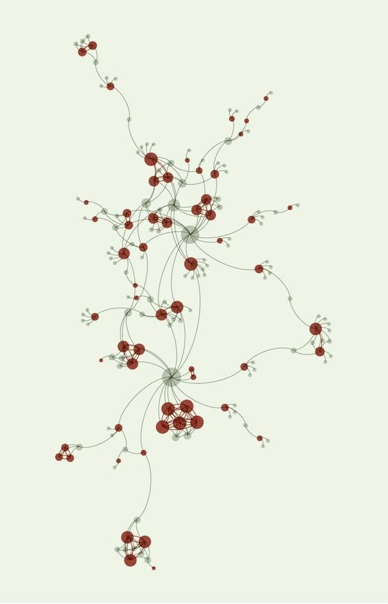
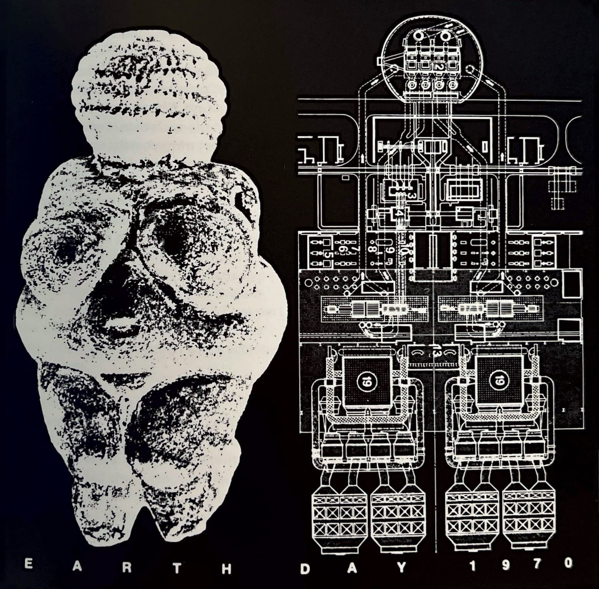
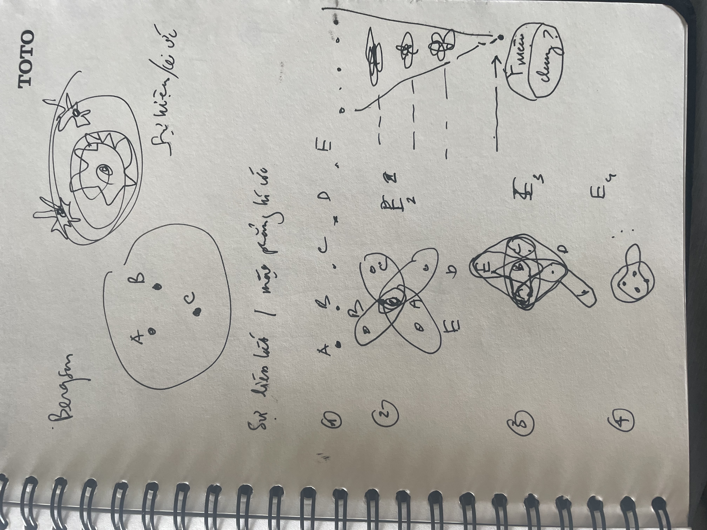
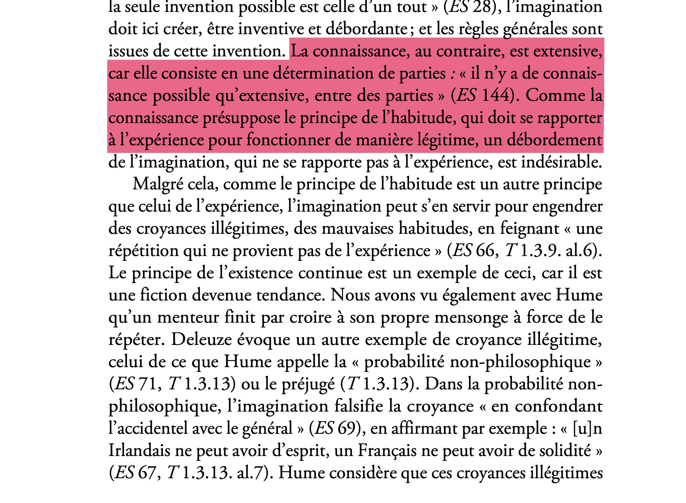
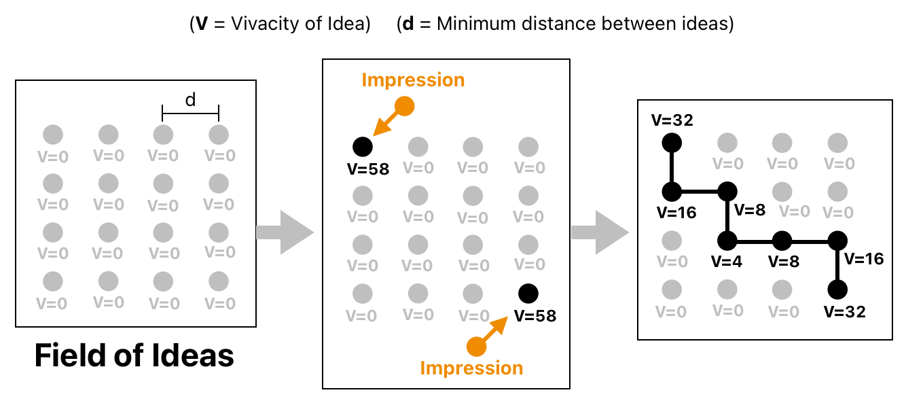

type: sách
author:
- "[[Deleuze]]"
sources:
- "[[Deleuze - Empirisme et subjectivité.pdf]]"
status: readingHume, David
Triết gia Scotland, 1711 – 1776.
Tác phẩm chính
Nhận thức
- A Treatise of Human Nature (1739-40).
- An Enquiry Concerning Human Understanding (1748).
Luân lý chính trị:
- An Enquiry concerning the Principles of Morals (1751).
- Essays, Moral, Political, and Literary, Part 1 (1741, 1777)
- Essays, Moral, Political, and Literary, Part 2 (1752, 1777)
- Political Discourses (1752–1758).
- Economic Essays.
- A Dissertation on the Passions (1757)
Mỹ học:
- Of the Standard of Taste (1757)
- Of Tragedy (1757).
Tôn giáo:
- The Natural History of Religion (1757).
- Of the Immortality of the Soul (1757)
Lịch sử
- The History of England (1754–1761).
Đại diện cho truyền thống duy nghiệm.
Theo thuyết bất khả tri. Thuyết hoài nghi.
Hình thành học thuyết rất trẻ (khoảng từ 19-25 tuổi)
--
Học thuyết về biện pháp nhân tạo, nguỵ tạo tương tự quan điểm của Tuân Tử.
Tags: #duynghiem
ý niệm tổng quát
Par conséquent, « le sens des principes d’association est le suivant : constituer une impression de réflexion, à partir d’impressions de sensation désignées. Le sens des principes de la passion est le même » (ES 132). C’est pour cette raison que Deleuze remarque que « la démarche de Hume est toujours la même, allant de l’absence d’une idée dans l’esprit à la présence d’une affection de l’esprit. La négation de l’idée de la chose affirme l’identité du caractère de cette chose avec la nature d’une impression de réflexion. Ainsi pour l’existence, l’idée générale, la connexion nécessaire, le moi, le vice et la vertu » (ES 12).
Tiêu chuẩn đánh giá Ý niệm.
1.Nguồn gốc: Mọi ý niệm đều truy được về một ấn tượng nào đó. Nếu có một ý niệm không truy được về ấn tượng thì đó là sản phẩm của tinh thần chứ không phải đến từ kinh nghiệm. Ví dụ: nhân quả, bản thể vật chất, tính thường tồn của hiện hữu bên ngoài.
2.Độ sống động/ cường độ, cho phép đánh giá tác động của ý niệm trong tinh thần.
Ít sống động
Ý niệm
kí ức : sống động hơn
trí tưởng tượng: liên kết ấn tượng.
ít sống động hơn nhưng tự do hơn
Sống động
Ấn tượng cảm giác
Sống động
Ấn tượng phản tư: tình cảm.
ý niệm giữ một quan hệ với ấn tượng chứ không phải với đối tượng !!!
Có một ngưỡng tri giác tối thiểu. từ ngưỡng đó thì không thể phân nhỏ tri giác hơn nữa.=> thuyết nguyên tử
ý niệm đơn 1
ý niệm đơn 2
Ấn tượng
Ít sống động
ấn tượng phản tư
| Quá trình | Cái xuất hiện |
|---|---|
| Tôi cảm thấy một cơn đau | Ấn tượng cảm giác |
| Cơn đau qua đi, tôi nhớ lại nó | Ý niệm về cơn đau — ở đây hình ảnh “tiếng vọng phai dần” khá thích hợp |
| Việc nhớ lại cơn đau làm nảy sinh sự sợ hãi, ác cảm hay mong muốn tránh nó | Ấn tượng phản tư — một xúc cảm mới, chứ không chỉ bản sao yếu hơn của cơn đau |

Tri giác: cảm xúc, cảm giác, ý niệm, ý muốn v.v..
Phân loại: ấn tượng và ý niệm. Đơn giản và phức hợp.
Hume, Nhận thức
Nhận thức là vượt quá cái được mang lại trong kinh nghiệm.
Nhận thức tức là tin. Niềm tin có hai loại: có cơ sở (justified) và không có cơ sở.
Thói quen
Chúng ta là các thói quen, thói quen nói Tôi.
Thói quen được hình thành từ từ và là một nguyên lý của bản tính.
Bản thân thói quen là một nguyên lý được hình thành từ các nguyên lý khác. Thói quen hình thành thói quen.
Liên kết: Deleuze, Hume, David


Dữ kiện
MOC, Thuyết duy nghiệm và tính chủ thể
Thuyết duy nghiệm và tính chủ thể
1. Trọng tâm
Deleuze đã đọc Hume từ góc độ hậu Kant xoay quanh câu hỏi về sự cấu thành của chủ thể.
- Lý thuyết về nguyên tử tri giác.
- Lý thuyết về quan hệ
- Lý thuyết về cái nhân tạo.
- thuyết liên tưởng, sự vận hành tích cực của Trí tưởng tượng
- cảm xúc và xã hội
- Niềm tinvà nhận thức
2. Cấu trúc & luận đề chính
Chủ thể được cấu thành trong trí tưởng tượng, bởi các nguyên tắc của bản tính sẽ định tính, tổ chức Trí tưởng tượng.
Chủ thể là một chủ thể thực hành.
Chống lại thuyết khế ước, vì khế ước là sự hạn chế tính ích kỉ, trong khi vấn đề của xã hội là mở rộng lòng thông cảm. Xã hội làm được việc này bằng cách sáng tạo ra các thiết chế, để thoả mãn xúc động, lợi ích.
3. Ghi chú
4.Mục lục:
- Vấn đề nhận thức và vấn đề luân lý.
- Thế giới văn hóa và quy tắc chung.
- Quyền năng của trí tưởng tượng trong luân lý và trong nhận thức.
- Thượng Đế và Tôn Giáo.
- Thuyết Duy Nghiệm Và Tính Chủ Thể.
- Các nguyên lý của bản tính con người.
__
Resouces
Bản dịch (đang hoàn thiện): Deleuze, Thuyết duy nghiệm và tính chủ thể
Commentaires:
Mô hình toán học Hume:
Nhận thấy rằng triết học tinh thần của người xưa đều phạm vào một khuyết điểm y như triết học tự nhiên của họ, tức hoàn toàn là giả thuyết, và đều dựa trên những quan niệm trừu tượng chứ không dựa trên thực nghiệm, mỗi triết gia bởi đều dựa trên trí tưởng tượng để đặt ra học thuyết về đức hạnh và hạnh phúc mà không nghiên cứu bản tính con người là gì, mà cái này mới chính là nguyên lý cho mọi lý thuyết luân lý. Do đó mà tôi quyết định lấy bản tính con người làm chủ để nghiên cứu chính và xem nó là cội nguồn của mọi chân lý của sự phê phán cũng như của luân lý.
Lớp Hume - Tài liệu
Tác giả: Deleuze
Tên sách: Deleuze - Empirisme et subjectivité.pdf
Bản dịch (đang hoàn thiện): Deleuze, Thuyết duy nghiệm và tính chủ thể
Bản tiếng Anh:
- Gilles Deleuze-Empiricism and Subjectivity.
Commentaires: - Empirisme transcendantal et subjectivité - Julie Van der Wielen.pdf
- David Hume. Sa vie, son œuvre.pdf
Canvas Link:
Mô hình toán học về Hume:
Tình cảm luân lý: tán thành hay phản đối dựa trên Quy tắc chung
cảm xúc cho liên tưởng một chiều, một hướng đi. Ngược lại, nguyên lý cảm xúc giả định sự liên tưởng
Tính thường hằng và đồng đều
Khuynh hướng
permalink: index--- permalink: index ---
CHỦ THÊ
Vấn đề trọng tâm của Thuyết duy nghiệm.
Chủ thể là tinh thần được cố định, được tổ chức thành hệ thống.
Chủ thể tin vào sự hiện hữu của đối tượng bên ngoài.
bản tính con người
Cổ Điển:
#quidsit : bản tính con người là có lý tính, có lời nói, là sống trong xã hội, chính trị, thành quốc.
Hiện đại:
Với Hume, David, bản tính con người được cấu thành bởi các nguyên lý khác nhau, các nguyên lý này không phải siêu việt ?
Quy tắc chung
Một tập hợp được quy định thì tạo ra một quy tắc chung.
Mang tính mở rộng và điều chỉnh.
Định nghĩa đúng của quy tắc chung: một cảm xúc của Trí tưởng tượng, Deleuze - Empirisme et subjectivité.pdf, tr.49.
Đời sống của con người rất gắn bó với quy tắc chung.
Nó thưởng xuyên tạo ra: từ những trường hợp cá biệt, nó suy ra một quy tắc tổng quát.
Quy tắc chung gần với sự vận hành của giác tính.
Thói quen
Chúng ta là các thói quen, thói quen nói Tôi.
Thói quen được hình thành từ từ và là một nguyên lý của bản tính.
Bản thân thói quen là một nguyên lý được hình thành từ các nguyên lý khác. Thói quen hình thành thói quen.
Liên kết: Deleuze, Hume, David
Các quy tắc chung và lợi ích chung cho tinh thần một hướng đi. Còn hơn thế, nó giúp con người định hướng, xác định thứ bậc trong cuộc sống: con người vốn có nhiều nhu cầu, có thể mâu thuẫn với nhau và mâu thuẫn trong cùng một con người. Vì vậy, cho dù các quy tắc chung vốn thường hạn chế những cảm xúc cá nhân, nhưng nó cũng là cách mà các cảm xúc tự vượt qua chính nó, nó chỉ có thể có được thoả mãn lâu dài và thường trực, theo đường vòng, bằng cái nhân tạo, Hume.
Nếu bản tính con người là vượt quá, là phát minh, sáng tạo, thì cảm thức luân lý cũng là Bản tính tự nhiên của con người.
Nói như Bergson: thói quen là cụ thể với từng trường hợp, nhưng Thói quen tạo ra thói quen là tổng quát.
Tự nhiên và văn hoá đi vào một quan hệ phức tạp. Các quy tắc cụ thể không thể được giải thích bởi bản tính tự nhiên, mà là một sự sáng tạo đích thực của con người, thông qua Trí tưởng tượng. Bản tính con người sau khi nhận được rung động của cảm xúc, sẽ được cố định và hình thành những khuynh hướng mới.
nguyên lý cảm xúc
lợi ích, lòng thông cảm.
cảm xúc rung động tinh thần. Theo nghĩa: hiệu ứng của cảm xúc trong tinh thần âm vang, échos, vọng âm, do đó cố định tinh thần.
thiết chế
Institution.
Thiết chế xã hội phân biệt với chính trị.
Thiết chế xã hội là: hôn nhân, quyền sở hữu. Qua đó tình dục và lợi ích cá nhân được thoả mãn.
Liên kết: sáng tạo, Quy tắc chung
nguyên lý liên tưởng
Ba nguyên lý: giống nhau, kề nhau, nhân quả.
Lĩnh vực nhận thức.
giác tính là một tình cảm, một cảm xúc
Chim làm tổ, con người xây nhà.
Tất cả chim chóc cùng loài, ở mọi thời đại và mọi xứ sở, đều xây tổ theo cách tương tự nhau: chính ở đó, chúng ta thấy sức mạnh của bản năng. Con người, ở những thời đại và những nơi chốn khác nhau, lại xây nhà theo những cách khác nhau; ở đây, chúng ta thấy ảnh hưởng của lý trí và tập quán. Chúng ta có thể rút ra một suy luận tương tự khi so sánh bản năng sinh sản với thiết chế sở hữu.
Phải dựa trên một thiên hướng tự nhiên để đổi hướng chữ không thay đổi thiên hướng này.
Thiên hướng, cảm xúc Phản tư , trở thành xã hội. Cảm xúc vượt quá lợi ích riêng.
sở hữu
Sở hữu dựa trên lòng thiên vị, dựa trên một cảm xúc tự nhiên của con người, nhưng quy tắc chung của sự sở hữu chính là cái nhân tạo, Hume, giúp vượt quá, mở rộng lòng vị kỉ để đạt đến một xã hội công chính.
lý tính, Hume không sinh ra hành động.
Xem Spinoza, lý tính muốn tác động lên hành động thì phải sinh ra một cảm xúc mạnh (chính là nhân quả tất yếu)
Sự can thiệp của giác tính
Chính là để biến một cảm xúc trở thành xã hội.
Luân lý, công lý
- không thể là kết quả của lý tính (vì lý tính không gây ảnh hưởng lên hành động).
- không phải cảm xúc gốc vì công lý bao gồm vô số các tình cảm khác, và thường có tính cưỡng chế.
- Cảm xúc gốc: tính thiên vị và lòng thông cảm.
- công lý là mở rộng lòng cảm thông, là hạn chế sự thiên vị.
- chống lại quan niệm xem con người là thiên vị.
Luân lý là quy ước nhân tạo, sinh ra trong xã hội. Nguồn gốc của nó bắt nguồn từ việc giải quyết sự sở hữu, vì sự sở hữu sinh ra mâu thuẫn.
Đối lập với: quan niệm công lý của Plato, có nguồn gốc siêu việt.
Đối lập với Công lý xét như trao đổi, có nguồn gốc thương mại.
Mục tiêu của luân lý, công lý là thiết lập một toàn thể, là tích hợp thành một toàn thể những lòng thông cảm.
- Vấn đề của cái toàn thể,Bergson, Kant.
- Luân lý có được nhờ áp dụng các quy tắc chung của sự sở hữu. Nhờ hai nguyên lý mở rộng và điều chỉnh, tạo ra cả một thế giới luân lý, công lý. Tức một thế giới mà những cảm xúc và lợi ích cá nhân nhường chỗ cho các quy tắc khác.
Thông Cảm
Lòng thông cảm
Là khả năng đồng cảm với niềm vui, nỗi buồn, cảnh ngộ của người khác.
Dựa trên sự giống nhau.
Cái tự nhiên ở con người là một lòng thông cảm hữu hạn, là một lòng thông cảm thiên vị. Theo nguyên lý liên tưởng, ta dễ thông cảm với người giống ta, nói tiếng giống ta, với người thân, cha mẹ hơn người ngoài.
thiên vị
lòng thông cảm của ta mang tính thiên vị : đi từ gần đến xa.
Ta > người giống xa > ít giống hơn
định luật hấp dẫn: ta không biết vì sao lại có, nhưng ta biết có một quy luật mô tả sự vận hành tức là kết quả/hiệu ứng của định luật và thế là đủ.
Tương tự với định luật Newton, thì các ấn tượng và ý niệm trong tinh thần cũng "hấp dẫn" lẫn nhau theo một quy luật cần có thể chỉ ra được ?
Xã hội
Cảm xúc
Lợi ích
Nihil est in intellectu quod non prius feurit in sensu.
Không có gì trong trí năng mà trước tiên không có trong cảm năng.
Phủ nhận tính bẩm sinh của lý trí.
sự chuyển dịch dễ dàng hay khó khăn từ ý niệm này sang ý niệm kia
KHUYNH HƯỚNG dự đoán
Kề nhau trong không gian và thời gian
theo cường độ nhanh/ chậm

Tinh thần
Đồng nhất với tập hợp ý niệm, với trí tưởng tượng.
Bản tính của tinh thần là vượt quá, là thói quen, khuynh hướng. Tinh thần là phát minh, sáng tạo, tổng quát hoá. Nó tin.
Đối tượng duy nhất của khoa học tâm trí
Thuyết duy nghiệm
Đối lập với: thuyết duy lý, thuyết siêu nghiệm.
Gần duy vật nhưng không được nhầm lẫn.
Hume, David đã mở ra một chiều kích mới cho thuyết duy nghiệm, bằng cách chuyển nó thành lý thuyết về quan hệ, của phép VÀ, sẽ được tiếp nối ở Russell và Whitehead.
Liên kết: sự cấu thành của chủ thể, Empérisme transcendantal
Phả hệ: Lucrèce, Hume, David, Nietzsche, Bergson, Deleuze.
Phê phán ý niệm trừu tượng, phê phán quan niệm vật chất và quảng tính
Tồn tại là tất cả những gì tri giác được.
Ý niệm Bản thể / thuộc cách
Nhân quả
Ý niệm Quan hệ
Niềm tin
Niềm tin
Tin và vượt quá cái biết.
Niềm tin là một tư kiến trở thành sống động. Tin là tin vào sự hiện hữu, thực tại của một đối tượng, kể cả nó không có ở đó, không phải đối tượng của một tri giác hiện thực.
Niềm tin vào sự hiện hữu của đối tượng bên ngoài giải quyết một mâu thuẫn: sự liên tục của tri giác bên trong và sự rời rạc của các ấn tượng cách nhau thời gian và không gian.
Nguyên lý Thế Giới là niềm tin vào sự hiện hưu liên tục của các đối tượng bên ngoài.
Niềm tin này được phóng chiếu từ trong ra ngoài.
Thế giới được kết nối bởi nhân quả, có các vật thể thường hằng trong thời gian và không gian, cho dù tôi không chứng kiến liên tục thì tôi vẫn biết cái bàn ở đó.
Tinh thần vượt quá dữ kiện, trở thành chủ động: nó đi từ cái chưa biết đến cái đã biết, nhưng vẫn không hết bị động (nó chiêm ngắm)
Ý niệm tổng quát
Giống nhau
hiện hữu
cơ chế sơ đồ
cơ chế sơ đồ (schematisme) của tinh thần.
Cơ chế sơ đồ là sự hình thành một phép dựng (thời không) của một ý niệm: đường thẳng là chuyển động của một điểm, mặt phẳng chuyển động của một đường.
Cơ chế sơ đồ tổng hợp một khái niệm với thời gian và không gian. Khác với sự tổng hợp khái niệm với khái niệm (phán đoán hậu nghiệm). Khác với sự tổng hợp trực quan với trực quan (tổng hợp thời gian).
Trí tưởng tượng
Tuân theo quy luật của bản tính con người.
Tương tự như quy luật kết nối sự vật trong khoa học tự nhiên.
Quy luật: xác định bằng kết quả, chứ không phải nguyên nhân.
Quan hệ của lý thuyết tri giác của Hume với toán tập hợp.
Tri giác rời rạc.
Sự sắp xếp, tổ chức tri giác thành các quan hệ.
Xét về mặt toán tập hợp.
**Cấp độ thứ nhất: tập hợp những phần tử
Giả sử chúng ta có những tri giác:
Một tập hợp như vậy chỉ cho biết những phần tử nào thuộc về nó.
Nó chưa cho biết các phần tử ấy xuất hiện theo thứ tự nào, tương tác với nhau thế nào, hay tại sao chúng tạo thành một kinh nghiệm thống nhất.
Cấp độ thứ hai: tập hợp có cấu trúc
Chúng ta bổ sung những quan hệ
Chẳng hạn,
Ở đây, sự thống nhất không nhất thiết nằm trong bản thân các phần tử mà nằm trong cấu trúc quan hệ.
Điều này đã giúp diễn đạt luận đề của Hume về tính ngoại tại của quan hệ.
**Cấp độ thứ ba: phép tổng hợp như một sự biến đổi
Ta có thể tiến xa hơn và định nghĩa một phép toán:
Trong đó
Chẳng hạn:
Ở đây (S) là một cấu trúc mới được hình thành từ (a,b,c).
Liên kết: Hume, David
lý tính, Hume
Lý tính là một sự quy định bình thản của xúc động, một loại cảm giác, được nhìn từ một khoảng cách xa
Huyễn tưởng
Huyễn tưởng không mất đi kể cả khi trí tưởng tượng đã được tổ chức.
Nó sẽ bịa ra những huyễn tưởng của nó: người Ai Len không có đầu óc; người Pháp không thể chín chắn.
nhận thức đi từ những phần đã biết đến những phần chưa biết;
luân lý tích hợp những đam mê thiên vị vào một toàn thể được sáng tạo.
câu hỏi không phải ý niệm mới được tạo ra thế nào mà vì sao ý niệm mới được tổ chức thành một hệ thống trật tự.
vì theo lẽ, các ý niệm tổng quát được tạo ra tự động từ sự vang vọng của ấn tượng trong tinh thần
nhưng tinh thần vẫn tạo ra những loại ý niệm tổng quát nhất định => có cả hai (hỗn loạn và một số ý niệm có tính định hướng)
tinh thần sáng tạo, nhưng nó sáng tạo theo một chiều nhất định, "chiều" (sens) = ý nghĩa, có một nghĩa
sự định hướng (orientation) của tinh thần được quy định bởi các nguyên lý cám xúc, các nhu cầu sinh học ??
cái tôi
tất yếu
Nhận thức có tính mở rộng VÌ nó cốt ở một sự quy định giữa các bộ phận.
Vì nhận thức giả định nguyên lý thói quen (liên hệ với kinh nghiệm), cho nên một sự tràn vượt của trí tưởng tượng (so với kinh nghiệm) là điều không mong muốn.

thiện/ ác
mỗi lần âm vang là một ý niệm tổng quát được tạo ra ?
ấn tượng phản tư
| Quá trình | Cái xuất hiện |
|---|---|
| Tôi cảm thấy một cơn đau | Ấn tượng cảm giác |
| Cơn đau qua đi, tôi nhớ lại nó | Ý niệm về cơn đau — ở đây hình ảnh “tiếng vọng phai dần” khá thích hợp |
| Việc nhớ lại cơn đau làm nảy sinh sự sợ hãi, ác cảm hay mong muốn tránh nó | Ấn tượng phản tư — một xúc cảm mới, chứ không chỉ bản sao yếu hơn của cơn đau |
âm vang trong tinh thần
Bảng so sánh nhận thức và luân lý, Hume
| Phương diện | Lĩnh vực nhận thức (connaissance) | Lĩnh vực luân lý (morale) |
|---|---|---|
| Vấn đề cơ bản | Từ cái đang được mang lại, làm sao khẳng định một cái chưa được mang lại? Chẳng hạn, từ sự kiện quan sát, dự đoán sự kiện sắp xảy ra. | Từ những thụ cảm và lợi ích thiên vị, làm sao hình thành lợi ích chung, công lý và những quy tắc sống cùng nhau? |
| Cái được cho ban đầu | Những tri giác phân biệt và những trường hợp đã quan sát; bản thân chúng không chứa tính tất yếu của mối liên hệ nhân quả. | Những thụ cảm, khuynh hướng, thiện cảm có phạm vi hạn chế: tôi quan tâm đến mình, người thân, người gần gũi. Vấn đề trước hết là tính thiên vị, chứ không đơn thuần là ích kỷ. |
| Nguyên lý giữ vai trò cấu thành | Các nguyên lý liên tưởng thiết lập quan hệ giữa các ý niệm; trong nhận thức nhân quả, thói quen khiến tinh thần chuyển từ cái này sang sự chờ đợi cái kia. | Các nguyên lý của thụ cảm xác lập mục đích, động cơ và lợi ích. Liên tưởng cùng với giác tính tham gia tổ chức những phương tiện và hoàn cảnh để thực hiện chúng. |
| Vai trò của liên tưởng | Là yếu tố cấu thành (constituant) trong hệ thống giác tính. | Được tiếp nhận như một yếu tố đã được cấu thành (constitué) của bản tính con người, rồi được huy động trong đời sống thụ cảm và xã hội. Nó không tự cung cấp mục đích luân lý. |
| Cách tinh thần được kích hoạt | Các nguyên lý cố định thành dòng tưởng tượng; thói quen quy định tinh thần suy luận và tin vào đối tượng vượt ngoài tri giác hiện tại. | Thụ cảm đem lại những mục đích thúc đẩy hành động; khi phản tư và vang vọng trong tưởng tượng, chúng mở rộng tầm nhìn, thay đổi hướng đi và tạo ra những Quy tắc chung. |
| Ấn tượng phản tư (impression de réflexion) | Điển hình là cảm nhận về tính tất yếu: sự quy định của tinh thần chuyển từ nguyên nhân sang kết quả. Tính tất yếu được cảm thấy trong tinh thần, chứ không phải một phẩm tính của sự vật. | Điển hình là cảm nhận tán thành hoặc phản đối một tính cách, một hành động. Thiện và ác được cảm nhận qua cách tinh thần bị tác động, chứ không được suy ra chỉ từ những quan hệ khách quan. |
| Thao tác đặc trưng | Suy luận (inférence): từ cái đã biết sang cái chưa biết. | Tích hợp (intégration): làm cho những lợi ích vốn loại trừ nhau có thể cùng tồn tại trong một hệ thống. Phán đoán luân lý, xét riêng như phán đoán luân lý, không phải một suy luận nhân quả. |
| Quan hệ giữa bộ phận và toàn thể | Đi từ phần này sang phần khác. Toàn thể, nếu được tập hợp lại, vẫn là một tập hợp các phần; nhận thức không cần sáng tạo một toàn thể luân lý. | Phải sáng tạo một toàn thể trong đó các thụ cảm và hành động nhận được định vị, được giới hạn và có nghĩa chung. Tình cảm phản ứng với toàn thể hoàn cảnh và quan hệ được giả định là đã biết. |
| Cơ chế sơ đồ (schématisme) | Sơ đồ quảng tính (extensif): xác định các phần, các quan hệ, những trường hợp có thể quan sát và tính toán. | Sơ đồ cường tính (intensif): tinh thần phản ứng với toàn thể bằng một cảm nhận mới, như tán thành hoặc lên án; không đơn thuần cộng thêm những phần đã biết. |
| Vai trò của tưởng tượng | Là nền tảng của các liên kết và niềm tin, nhưng cần được điều chỉnh để sự chuyển tiếp giữa các ý niệm phù hợp với kinh nghiệm. | Là nơi các đam mê phản chiếu, cộng hưởng và phát minh ra cách thỏa mãn gián tiếp: thiết chế, quy ước, những hình thức hợp tác. |
| Ý nghĩa của quy tắc tổng quát | Hướng dẫn và điều chỉnh suy luận: phân biệt liên hệ ổn định với sự trùng hợp ngẫu nhiên, chống định kiến và những khái quát sai lầm. | Tổ chức một hệ thống hành động và một điểm nhìn chung để đánh giá: công lý không phụ thuộc vào lợi ích tức thời của từng người hay từng hành vi riêng lẻ. |
| Địa vị của sự sáng tạo và hư cấu | Khi tưởng tượng vượt khỏi căn cứ của kinh nghiệm, nó có thể tạo ra sai lầm, định kiến và niềm tin không chính đáng. Một số hư cấu tự nhiên, như niềm tin vào sự tồn tại liên tục của vật thể, vẫn không thể bị loại bỏ khỏi đời sống. | Tính nhân tạo có thể mang giá trị tích cực: công lý và thiết chế là những phát minh giúp đam mê được thỏa mãn ổn định. Tuy vậy, điều này không có nghĩa mọi phát minh đều tốt; chúng vẫn phải được điều chỉnh. |
| Quan hệ với tự nhiên | Thói quen làm phát sinh một khuynh hướng tự nhiên của tinh thần: chờ đợi tương lai tương ứng với quá khứ. | Thiết chế không có sẵn như bản năng, nhưng khả năng phát minh thuộc về bản tính con người; cái nhân tạo, một khi được thiết lập, có thể trở thành khuynh hướng tự nhiên. |
| Kết quả | Một chủ thể tin và nhận thức: có khả năng dự đoán, suy luận, điều chỉnh niềm tin. | Một chủ thể hành động và đánh giá: có khả năng vượt tính thiên vị, tham gia thiết chế, tán thành hoặc phản đối từ điểm nhìn chung. |
| Đoạn đối chiếu chính trong Deleuze | Tr. 19–22; 60–71; 144–147. | Tr. 19–22; 23–39; 59–60; 147–150. |
một ấn tượng phản tư.
đi từ một ấn tượng cảm giác ->

